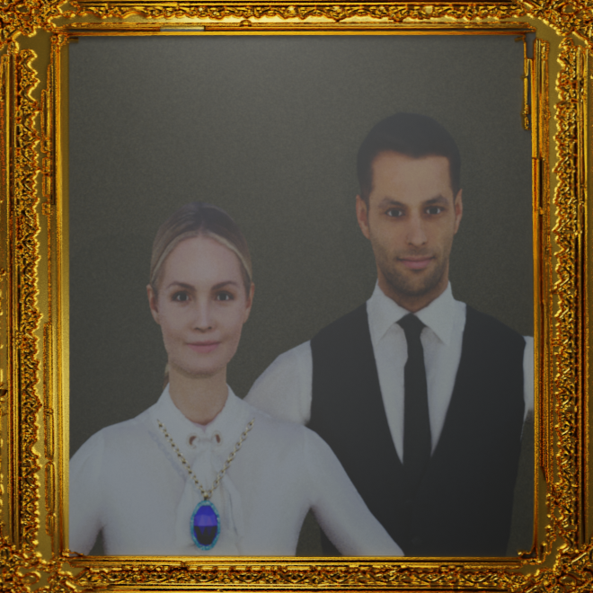

|
Self Medication Factors in Bangladesh
Ashif Mahmud Joy, Dalia Akter, Sadia Nur Nazifa, Shaila Sharmin, Md. Ahsan Arif Mendeley Data, 2025 Dataset |
|

|
Unlocking Voices: Assessing the Usability and
Accessibility of Mobile Applications for Stutter
Reduction Sadia Nur Nazifa, Shadmanee Tasneem Mulk, Tasfia Akter Sara, Tasnim Ullah Shakib, Muhammad Nazrul Islam ICCIT 2024 |
|
A multiple biomolecules-based rapid life detection
protocol embedded in a rover scientific subsystem for
soil sample analysis
Akib Zaman, Fardeen Ashraf, Haseena Khan, Faria Noshin Ahona, Oliullah Samir, Asif Mahmud Rayhan, Sadia Nur Nazifa, Hafsah Chowdhury, Md. Mahbubur Rahman Scientific Reports, 2024 Paper |
|
|
PPDHero: Requirements Elicitation and Development of
a System to Empower new Mothers on Postpartum
Depression
Tasfia Sara, Sadia Nur Nazifa, Shadmanee Tasneem, Tasnim Ullah Shakib, MD Nazrul Islam Lecture Notes in Networks and Systems, 2024 |
|
Currently I am a Lecturer in Computer Science and Engineering at the University of Scholars, where I teach and mentor students in programming, systems design, and competitive programming. My research work revolves around Artificial Intelligence, Human-Computer Interaction, and their intersection with real-world impact.
Email / CV / Google Scholar / LinkedIn / GitHub |
Research InterestHuman-Computer InteractionExploring how people interact with technology to design solutions that improve everyday life, with a focus on healthcare systems and user-friendly digital platforms. Natural Language ProcessingApplying language technologies to develop conversational systems that facilitate communication, improve accessibility, and address real-world challenges in education and everyday life. Artificial IntelligenceInvestigating intelligent systems that can learn, reason, and solve problems, with a focus on designing AI solutions that address real-world challenges across healthcare, sustainability, and diverse practical domains. |
|
Hydroferma A mobile app for a hydroponic vertical farming system integrating software and hardware for water/nutrient control. Video IoT Image Processing Machine Learning |
|
|  |
Sapphire Necklace
An animated short video designed with Blender 3.6, originating from original graphics concepts. Video Blender 3D Animation |
|
Smart Office Attendance System
Developed with RFID and Arduino for automatic identification and data storage. Arduino Embedded Systems |
News |
May 2025
Organized "She Innovates", a project-based competition to promote STEM engagement among female students.
March 2025
Started as a Data Analyst of QFactor Chiropractic in Work Bright Business Solutions.
2025
Published a research paper in peer-reviewed journals, Scientific Reports. Read here.
December 2024
Received the Best Technical Presentation award at the 27th IEEE ICCIT for research on Mobile Applications for Stutter Reduction.
August 2024
Joined the University of Scholars as a Lecturer in the Department of Computer Science and Engineering. Check out my Academic Profile.
April 2024
Graduated from the Military Institute of Science and Technology with a Bachelor's degree.
2023
Published my first research paper as a co-author in ISDA'23. Read here.
June 2023
Led the MIST Mongol Barota Science Subteam in Anatolian Rover Challenge, securing 5th place in ARC, Turkiye.
February 2023
Completed a software engineering internship at Brain Station 23.
2022
Achieved 2nd Runners Up position in the Anatolian Rover Challenge (ARC), Turkiye.
2021
Secured 1st place in the Virtual University Rover Challenge (URC), organized by the Mars Society, USA.
Gallery |
Recorded Lectures of Sorting an Array
Problem-setter of 6th IUPC of University of Scholars
Certification Ceremony of 'She Innovates' as a Co-organizer
Attended 1st Convocation of University of Scholars as a Lecturer
Conducted Training on Poster Presentation
Leading Phoenix Rover Science Team at Mars Rover Competition
×

|
© 2025 Sadia Nur Nazifa | Template adapted from Jon Barron's website. |